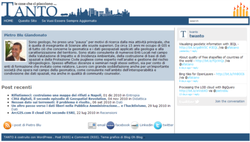

Non dimenticherò facilmente il 2010 per mille ragioni; alcune (importanti) sono legate a TANTO.
Nel luglio di quest’anno questo blog ha festeggiato il suo quinto compleanno (per questo trovate le cinque candeline in alto a destra in homepage da diverso tempo), ed esserne stato il fondatore mi riempe di orgoglio e soprattutto mi fa stare bene.
Come ho già scritto, tutto è iniziato per la mia voglia di testare una delle migliori piattaforme open-source di blogging mai creata: WordPress. All’inizio era un blog autoreferenziale (lo sono “giustamente” un po’ tutti i diari, anche quelli online), il cui tema di fondo era (ed è) parlare de “le cose che mi piacciono …TANTO”. Ci presi gusto subito, ma più passava il tempo, più mi rendevo conto che fosse necessario fissare dei limiti alla varietà dei temi da sviluppare. Scelsi quelli legati (in maniera un po’ larga) alla mia professione: i sistemi informativi geografici si impossessarono definitivamente di questo spazio, che oggi è (credo) il blog italiano più longevo che parli di questi temi.
Il tempo che passa è da solo poca cosa. Per essere un blog senza sponsor, per lo sforzo di qualità che c’è alle spalle e per l’affetto dei lettori, anche gli anni di vita sono comunque una piccola medaglia.
Tante cose sono cambiate anno dopo anno, ma nel 2010 c’è stato un salto: si è infatti consolidato il gruppo di autori e tra noi parliamo (prendendoci forse troppo sul serio) di “redazione di TANTO”. Questo è avvenuto per diverse ragioni, e lungo strade differenti.
Nel 2010 si sono aggiunti tre nuovi autori. In ordine di pubblicazione: Lorenzo Perone, Giovanni Allegri e Antonio Falciano. La ricchezza di questo blog sono le persone, e questi ingressi ne sono stati ancora una volta una prova robusta.
Siamo diventati nove: persone con storie personali, professionali e geografiche spesso molto diverse, ma con un grande piacere nell’incontrarsi “al bar dietro al router”. Definiamo così il nostro modo di stare insieme, perché non ci incontriamo (quasi) mai di persona, e ci “parliamo” (quasi) esclusivamente per posta elettronica. Parliamo di bar, perché sono incontri veloci pieni di leggerezza (nell’accezione positiva del termine), con i capelli un po’ spettinati e con il giornale in mano, con la voglia di discutere di massimi sistemi e magari parlare di arancine siciliane. Alessio Di Lorenzo ha creato a metà del 2009 una mailing list per questi incontri al bar, e l’utilizzo che ne abbiamo fatto, dà una chiara idea di quanto siano cambiate le cose in quest’ultimo anno: in sei mesi del 2009 ci siamo scambiati circa 200 messaggi, mentre nel solo novembre del 2010 sono stati circa 300; veramente “straordinerio”.
La quantità e la qualità dei contributi hanno aumentato la complessità del sistema e anche per questa ragione – circa sei mesi fa - Gerlando Gibilaro ha scritto il nucleo principale di quello che è diventato il regolamento di TANTO. Il processo che ha portato alla stesura finale di questo documento è stato un esempio del flusso di lavoro “tipo” che sta dietro a (quasi) tutto ciò che vedete sul sito: si lancia una proposta nel modo più dettagliato possibile, si apre su questa una discussione, l’autore della proposta recepisce (eventualmente) alcune delle modifiche/integrazioni/correzione ricevute, propone una nuova versione e si ricomincia il giro. Così facendo alle volte ci perdiamo in vortici quasi senza uscita, ma è di per sé un fatto raro; inoltre anche le discussioni apparentemente più noiose, spesso nascondono dentro piccole/grandi risorse, delle noci da mangiare successivamente, al risveglio dal letargo. Avere delle regole non è un peso; tutto è più leggero perché abbiamo uno strumento che ci consente di trovare una soluzione nei momenti difficili, e che soprattutto definisce il flusso di lavoro della redazione. Ad oggi non abbiamo mai usato il regolamento, e per farvi capire quale sia il nostro habitat citerò l’articolo 12 del regolamento:
Per qualunque controversia possa nascere in ordine alla gestione di TANTO avrà sempre ragione chi pronuncia la frase “Se ti segni un otto, entri in una valle di lacrime [...] La valle di lacrime”, citando film, personaggio, attore, regista e numero di scena. Se la frase viene detta durante un litigio, colui contro il quale viene pronunziata deve segnare zero.
Nel 2010 la redazione ha iniziato a fare ordine sul blog (la strada è ancora lunga), partendo dalla riorganizzazione delle categorie. Fino a poco tempo fa TANTO ne aveva più di trenta, ed era sicuramente meno leggibile. Da settembre ne abbiamo soltanto sei: Dati, Didattica, Eventi, Entropia, News, Recensioni e Strumenti. Il lavoro di aggregazione dei vecchi post in nuove categorie è stato lungo (specie per i vecchi autori  ), ma l’aspetto più interessante è stato quello editoriale: abbiamo discusso dell’anima di questo sito, dei temi che abbiamo sviluppato e di quelli che vorremmo provare a sviluppare, ed infine abbiamo fatto delle scelte.
), ma l’aspetto più interessante è stato quello editoriale: abbiamo discusso dell’anima di questo sito, dei temi che abbiamo sviluppato e di quelli che vorremmo provare a sviluppare, ed infine abbiamo fatto delle scelte.
Sul layout del sito abbiamo fatto piccole modifiche, la più importante delle quali è legata ancora una volta alle persone. Ci sembrava doveroso dare visibilità agli autori, e per ognuno è stata creata una pagina che contiene una piccola nota biografica, l’elenco degli ultimi post, l’indirizzo di posta elettronica e gli URL (eventuali) del cosiddetto web sociale.

Per accedervi basta cliccare sul nome dell’autore, che trovate riportato sotto il titolo di ogni post.
Grazie all’eccellente WPtouch TANTO è un sito ottimizzato per i dispositivi mobili, ed il layout è talmente ben fatto (non è opera nostra) da risultare quasi più leggibile di quello standard.
Un’altra piccola novità di impaginazione del 2010 sono i widget di twanto e tantobook, presenti nella colonna di destra. Su questi trovate traccia rispettivamente delle attività del canale Twitter e di quello Facebook di questo blog (sono un altro modo per seguirci). La vera novità in questo caso è in realtà l’utilizzo dei social network, di cui i widget rappresentano soltanto una modalità di output.
Il canale Twitter è quello che abbiamo scelto di usare più attivamente (è comunque replicato su quello Facebook): ci pubblichiamo piccole notizie sulle quali non riteniamo necessario (o non abbiamo il tempo di) scrivere un post, e che vogliamo comunque pubblicare e diffondere perché valutate interessanti. Da un po’ di tempo, in corrispondenza di ogni cinguettio, trovate nota di chi di noi lo ha “emesso”: questo è opera ad esempio di giohappy.
E’ stato un anno in cui grazie a Sergio Farruggia ho scoperto che vorrei vivere in un mondo un po’ più olonico, e leggere questo suo post è stato (ed è sempre) per me un momento di grande ristoro.
Abbiamo anche rischiato di diventare famosi grazie al già citato Antonio Falciano, ed ai suoi post: uno per tutti il bellissimo “Where to sleep in Turin”. Se ho imparato a conoscerlo, nel 2011 ne vedremo di migliori. 
Due di noi – Antonio Falciano e Pietro Blu Giandonato – sono stati invitati in veste di autori di questo blog, a fare da relatori all’ITN Expo- Infrastructure, Telematics & Navigation. E’ andato Pietro, che ha preparato e presentato l’interessantissimo “I luoghi degli “open data“.
Ci siamo anche “buttati in politica” e, al grido di “L’unità di tutte le scienze è trovata nella geografia”, abbiamo organizzato e realizzato una cosa abbastanza rara (almeno in Italia): fare in modo che nello stesso giorno quindici blog fossero una sola voce.
Ci sarebbero tante altre cose da elencare, ma voglio concludere raccontandovi la più bella.
A novembre di quest’anno, in occasione del GIS DAY, alcuni di noi hanno avuto la possibilità di incontrarsi per la prima volta. Io, Alessio, Antonio D’Argenio, Gerlando, Giovanni e Pietro Blu ci siamo trovati in un bar a mangiare arancine “bomba” e cannoli; altro che bar dietro al router.
Era la prima volta che incontravo molti di loro, ma ho avuto la sensazione di essere ad un riunione con i compagni di classe del liceo; ai tempi del liceo.
Fare TANTO mi ha dato la possibilità di arricchirmi molto dal punto di vista umano e professionale. Mai avrei pensato di trovare negli autori di questo normalissimo blog, dei compagni di vita.
L’augurio che faccio a tutti voi (ed anche a me stesso) è quello di riuscire a vivere nel 2011 alcune delle emozioni/incontri/occasioni come quelle che ho avuto nel 2010, di potere camminare accanto a belle persone con cui condividere ideali, pensieri, lotte, professione e … arancine.
Buon 2011 da tutti noi
I contenuti potrebbero non essere più adeguati ai tempi!

By Matteo Brunati on dic 31, 2010
Auguroni di cuore per un 2011 ancor più sfavillante! .) Io vi ho scoperto quest’anno e non vi mollo più, siete i pochi che in Italia usano Simile Exhibit eh eh
A parte gli scherzi, un anno che ha aperto tante strade, questo è certo. Vedremo se riusciremo a percorrerle.
By Antonio Falciano on dic 31, 2010
Buon 2011 anche a te, Matteo! Grazie ancora per il tuo ennesimo attestato di stima.
Grazie ancora per il tuo ennesimo attestato di stima.
Speriamo che nel prossimo anno si aprano nuovi varchi da percorrere insieme, magari attraverso un’ampia diffusione dei LOD anche qui in Italia!! A presto e ancora auguri!!
By Emanuele on dic 31, 2010
Un saluto ed un augurio di buon anno ad un uomo a cui devo TANTO dal punto di vista umano e professionale.
By Maurizio Foderà on dic 31, 2010
Ciao Andrea
ho appena letto il tuo post entropico (S) e sono d’accordo con te che “condividere”, …anche Arancine (non a caso ho scritto con la lettera maiuscola), può portare a vivere nuovi incontri/emozioni/occasioni.
Ho usato la parola “Condivisione” qualche giorno fa scoprendo il nuovo blog di Claudia GIS tales e le dicevo (cito me stesso) “Io credo molto nella parola “Condivisione”! Condividere percorsi comuni, idee e obbiettivi, sicuramente potrà portare noi e la nostra bella terra molto lontano!
Ad Maiora!”
Voglio fare a te e a tutta la Redazione lo stesso augurio: Ad Maiora per il 2011 e per tutti gli anni che verranno. Conoscere te e Tanto ha aggiunto un ulteriore tassello al mio modo di vedere e e percepire il nostro essere Geomatici, quindi mi auguro e vi auguro che con il nostro lavoro quotidiano, fatto a volte di piccole cose ma anche di grandi traguardi, possiamo contribuire ad aggiungere nuovi interessanti tasselli nelle persone che ci stanno attorno e che avremo la fortuna di conoscere!
Buon Anno e a presto!
By Andrea Borruso on dic 31, 2010
Caro Emanuele,
visto il rapporto che ci lega, e visto i ruoli che avevamo vicendevolmente quando ci siamo sconosciuti, ti direi “Specchio senza ritorno”
Ti ringrazio per gli auguri e perché anche io ti devo molto.
A presto,
a
By Andrea Borruso on dic 31, 2010
Caro Maurizio,
è sempre un piacere “incrociarti” come persona e come professionista. Dici che questo post (ed i suoi commenti) sta diventando troppo mieloso?
Sei per noi un compagno di viaggio virtuale da un po’ di tempo, ed anche questo che ci ha reso più facile “aggiungere nuovi interessanti tasselli nelle persone che ci stanno attorno”.
Grazie da tutti noi,
a
By Marco Cerruti on gen 14, 2011
Ciao Andrea e ciao tutti,
auguri e complimenti di cuore.
Mark it zero!
By Andrea Borruso on gen 14, 2011
Ciao Marco,
grazie mille ed auguri anche a te.
Ma dove sei finito?
Non giocare troppo a bowling
By Marco Cerruti on gen 14, 2011
Ci sono sempre, magari meno presente in rete. D’altra parte FGI anche se poco aggiornato è una macchina che si autoalimenta, ed è una soddisfazione non da poco.
Per quanto riguarda me, ho virato sulla progettazione di fotovoltaico a terra, e sono reduce da un cambio lavorativo recentissimo che mi ha riportato a lavorare parecchio con software GFOSS… hai visto mai che ritorno alla ribalta anche tra i geobloggers…
Ciao!